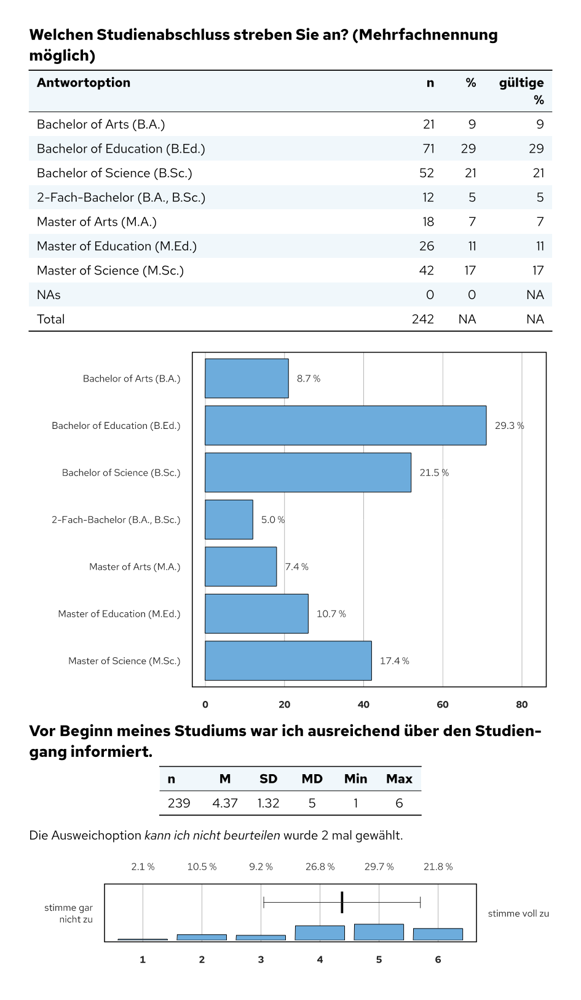

setanalysis
Source:README.en.md
Deutsch · English · Website (German)


R package for personalised survey reports, in particular course evaluations and surveys of students and graduates. One line of code per question produces the heading, table and chart for a Quarto report (PDF via Typst). A report table and a rules table turn a single template into many reports with different content, e.g. one per department or degree programme.
The package, its documentation and the generated reports are in German.


Features
-
Import from evasys:
evasys_read_data()reads raw data and codebook and attaches question text, question number, question type and value labels to every variable. -
One function per question type: single choice, multiple choice, rating scales, groups of rating scale items, numbers, semester of study, grades, workload, response rate and open questions – each with consistently styled tables and charts.
merge_many()analyses whole blocks of questions at once. -
Many reports from one template:
input_tabelle()uses a report table and a rules table (Excel) to decide which questions appear in which report. - Open answers in an appendix: identical answers are combined, links lead from the question to the appendix and back.
-
Consistent look: accent colour, column widths and defaults are set in one place with
change_analysis_defaults(); the font “Red Hat Text” is bundled for the charts.
Installation
# install.packages("pak")
pak::pak("donvollb/setanalysis")The reports also require Quarto (≥ 1.7, includes Typst) and the font Red Hat Text.
Quick start
The analysis functions write Markdown or Typst to the output, so they are called in R chunks with output: asis:
---
title: "Lehrveranstaltungsevaluation"
format: typst
---
```{r}
#| include: false
library(setanalysis)
daten <- BspDaten$dataLVE # own data: evasys_read_data("rohdaten.csv", "codebuch.csv")
```
```{r}
#| output: asis
merge_aggr_sk(daten[, c("KF_01", "KF_02", "KF_03")], kennung = daten$Kennung, aggr = TRUE)
merge_grade(daten$Note, daten$Kennung)
merge_sc(daten$V3_D)
```In RStudio, a single analysis can be previewed without rendering: markdown_in_viewer(merge_sc(BspDaten$dataLVE$V3_D)).
Typical workflow
-
Read the data with
evasys_read_data()(or add the attributeslabel,nr,typeandlabelsto your own data). -
Define the reports (for several reports with different content): a report table with one row per report and a rules table with one condition per question;
input_tabelle()computes the switchesinkl.<section>.<question>andheader<section>. -
Write the report in Quarto: one analysis function per question, e.g.
merge_sc(x, nr = "1.3"). Withnr, the function checks the switchinkl.1.3and only appears in the matching reports.appendix_open()at the end prints the collected open answers. -
Render all reports, e.g. with
quarto::quarto_render()in a loop over the rows of the report table.
The vignette Einen Evaluationsbericht erstellen walks through all steps (in German). All help pages are in the function reference; in R, ?setanalysis gives an overview.
A complete report template with layout (header and footer, table of contents, accent colour) and two working examples is set-template.
Function overview
| Area | Functions |
|---|---|
| Analysis per question |
merge_sc(), merge_mc(), merge_sk(), merge_aggr_sk(), merge_num(), merge_fachsem(), merge_grade(), merge_wl(), merge_rueck(), merge_subj(), merge_open(), appendix_open()
|
| Automatic by question type |
merge_auto(), merge_many()
|
| Data preparation |
evasys_read_data(), input_tabelle(), aggr_data(), label_test()
|
| Tables |
lv_table(), table_freq(), table_stat_single(), table_stat_multi()
|
| Charts |
barplot_freq(), barplot_scmc(), barplot_sk(), boxplot_aggr_sk(), boxplot_grade(), boxplot_rueck(), boxplot_wl()
|
| Legends |
bsp_table_stat(), bsp_boxplot(), bsp_evasys_sk6()
|
| Tools |
change_analysis_defaults(), subchunkify(), markdown_in_viewer()
|
The names from version 1.0.0 (e.g. merge.sc(), table.freq()) still work, see ?setanalysis-deprecated.
Example data
BspDaten contains fictional, randomly generated data from a course evaluation and a first-year student survey in the format of evasys_read_data(). Example files for evasys_read_data() and input_tabelle() are in system.file("extdata", package = "setanalysis").
Development
The behaviour of all functions is covered by snapshot tests (testthat) that compare the generated report building blocks, including the charts (SVG). The scripts that generate the example data and preview images are in data-raw/. Changes are listed in the changelog (German).
Authors and licence
Dominik Vollbracht and Simon Männle · MIT License